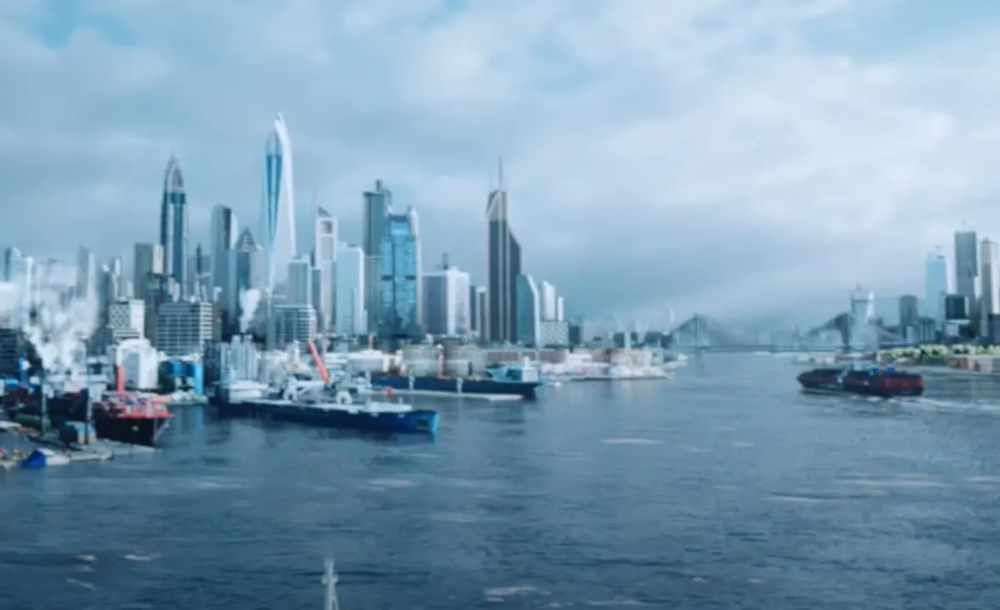
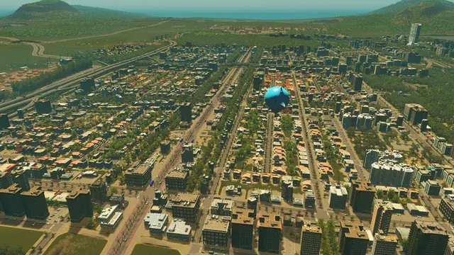
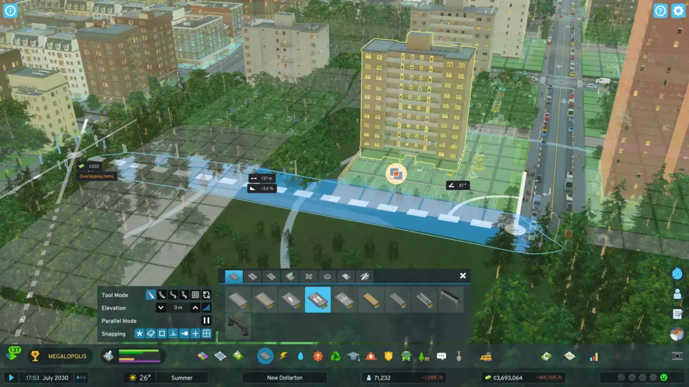
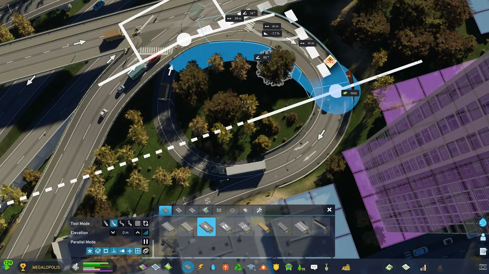
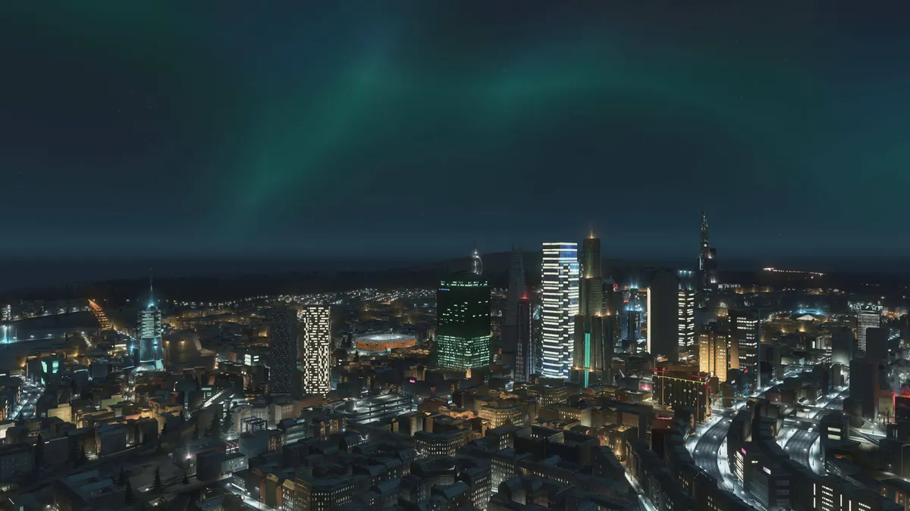

Motor de videojuegos
Cities: Skylines II
Trabajo de motor en un simulador de ciudades a gran escala: gestión de decenas de miles de agentes simultáneos y optimización de Unity Engine para simulación masiva.
Capturas





Capturas e imágenes promocionales cedidas para este caso de estudio — © Paradox Interactive / Colossal Order.
Sobre el juego
Cities: Skylines II es la secuela del simulador de construcción de ciudades más jugado de su género, desarrollado originalmente por Colossal Order y publicado por Paradox Interactive. Simula miles de ciudadanos individuales, cada uno con su propia rutina, trabajo y trayecto, sobre un mapa que puede crecer hasta convertirse en una metrópolis.
¿Qué es «el motor» en un simulador así?
El motor es el software que hay debajo del juego: no decide qué aspecto tiene un edificio ni qué impuestos cobra el ayuntamiento — decide cómo se renderiza cada fotograma, cómo se mueve cada coche por sus carriles, cuánta memoria ocupa cada ciudadano simulado y cuándo dejar de dibujar un edificio lejano para ahorrar recursos. El juego son las reglas; el motor es lo que hace que esas reglas se ejecuten 30 o 60 veces por segundo sin que el ordenador se ahogue. Aquí, además, tiene que sostener una ciudad entera calculando, fotograma a fotograma, la ruta de cada coche, el trayecto de cada ciudadano y el consumo de cada servicio público — todo a la vez, sin que el juego se ralentice al crecer el mapa. Es el problema de rendimiento más exigente del género: cuantos más agentes simula, más caro es cada fotograma.
Un lanzamiento con muchos problemas de rendimiento
Cities: Skylines II salió en PC el 24 de octubre de 2023 con un lanzamiento accidentado: incluso en tarjetas gráficas de gama alta el framerate se hundía, había tirones constantes al ampliar el mapa, y la versión de consola tuvo que retrasarse — todavía hoy sigue sin fecha confirmada. Buena parte del problema venía de cómo el motor gestionaba el nivel de detalle (LOD) y el culling: no simplificaba a tiempo los modelos lejanos ni dejaba de dibujar lo que no se veía en pantalla, así que cada fotograma cargaba con más geometría de la necesaria.
Colossal Order —y, desde que Iceflake Studios tomó el relevo del desarrollo en 2026, también ellos— respondieron con parches de rendimiento casi semanales durante meses, y llegaron a comprometerse públicamente a no lanzar contenido de pago hasta arreglarlo. Nuestro trabajo de motor entró exactamente ahí: descongestionar ese cuello de botella de LOD y culling sin reducir la escala de la simulación — más agentes por fotograma, no menos, pero sin que cada uno cueste tanto como al principio.
Esa promesa no se cumplió del todo: el primer contenido de pago, el pack de assets Beach Properties, salió el 25 de marzo de 2024 con el rendimiento aún sin resolver del todo — la respuesta de la comunidad fue tan mala que Colossal Order lo retiró de la venta semanas después y lo convirtió en gratuito. La actualización «Economy 2.0» (junio de 2024) y una serie de parches centrados en LOD por personaje y agrupación de mallas fueron marcando, mes a mes, el camino real hacia un juego que hoy rinde muy por encima de como lo hacía en el lanzamiento.
Nuestro trabajo de motor
Disponible en
← Volver a Gabriel Díaz Bernal